Warsztat
Podtytuł [uzupełnij: data warsztatów]
02
03
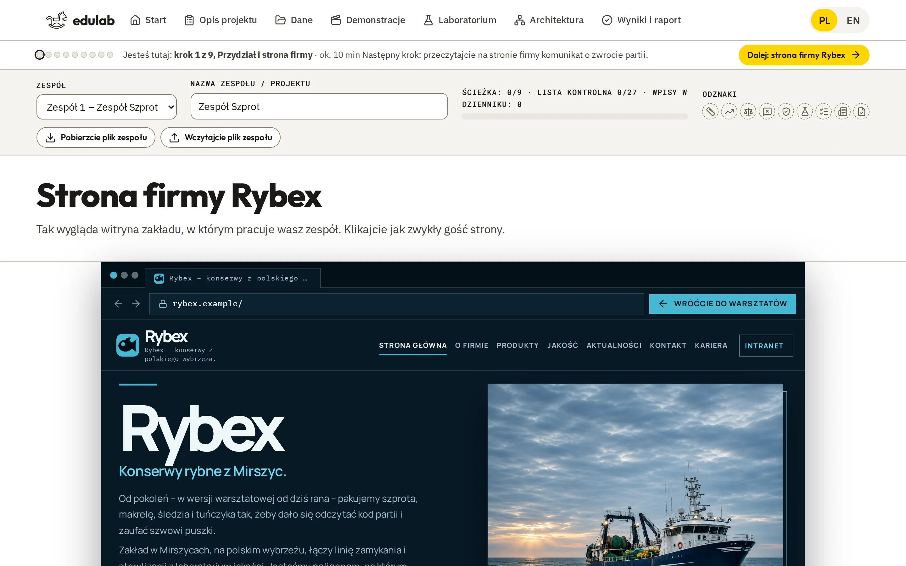
04
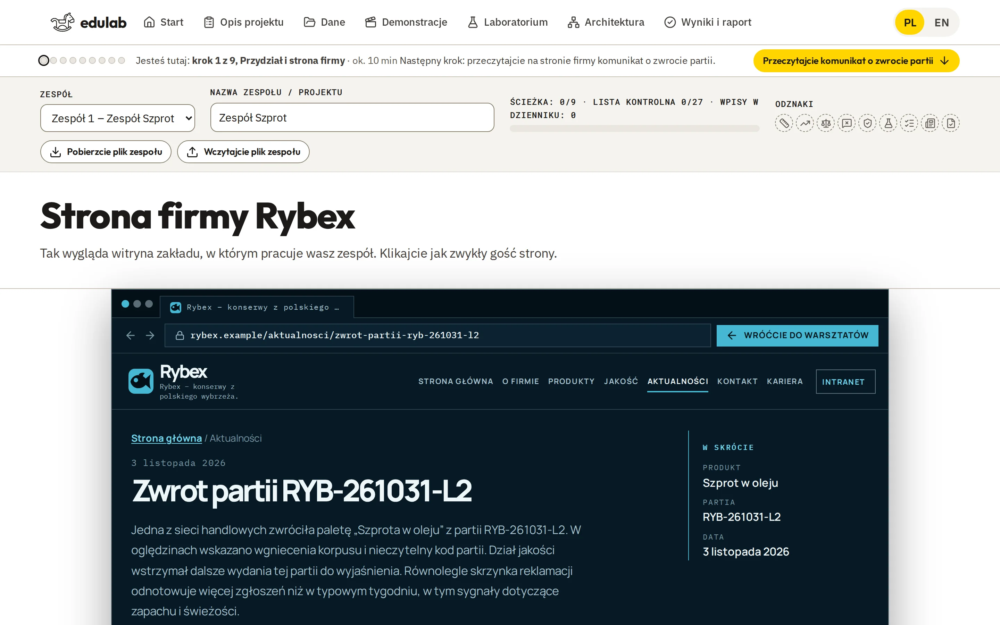
05
06
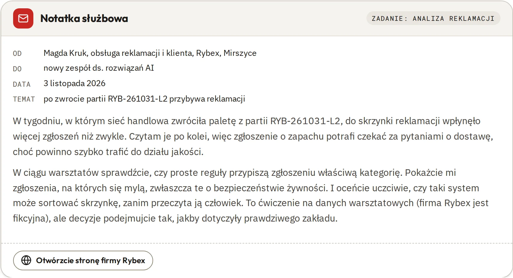
07
08
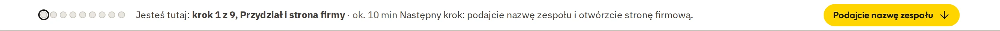
09 · join · 10 min
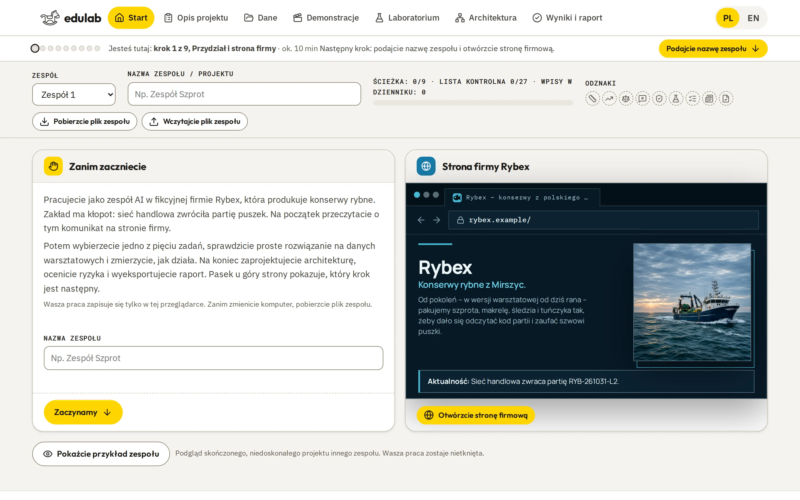
10 · cycle · 10 min
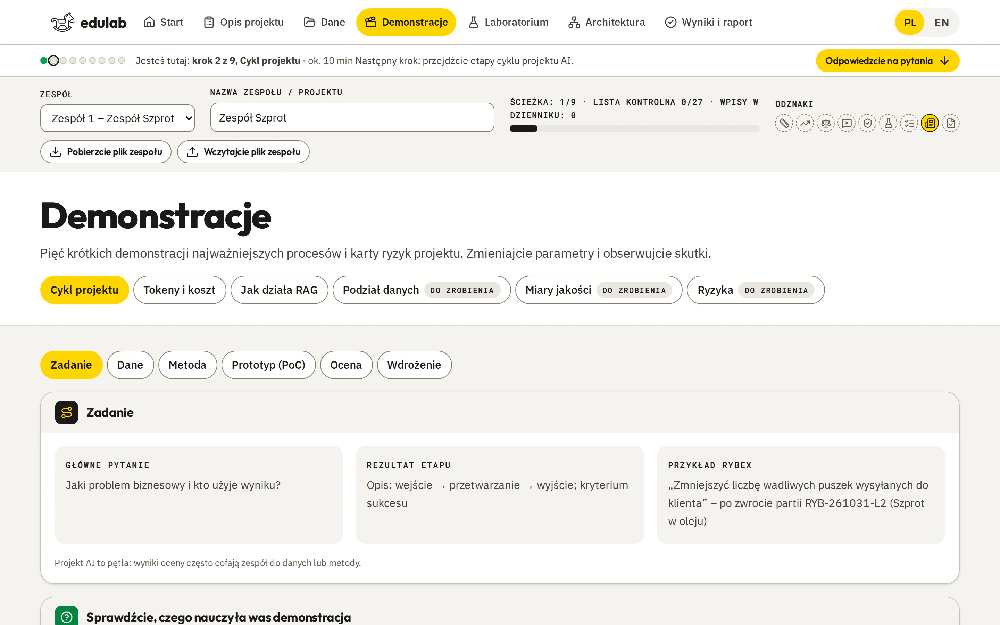
11 · task · 10 min
12 · data · 15 min
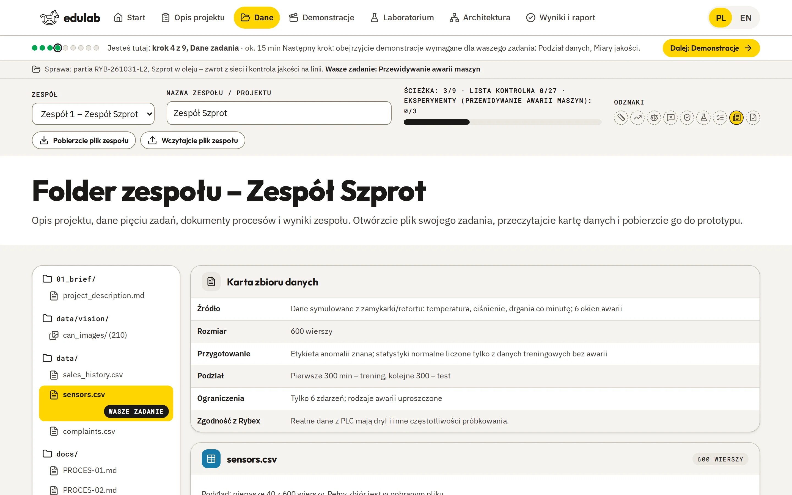
13 · demos · 20 min
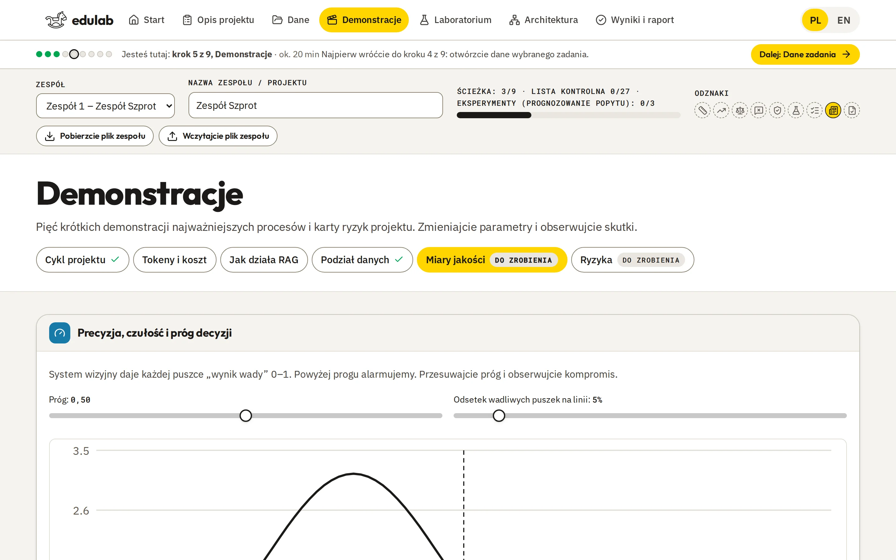
14 · base · 25 min
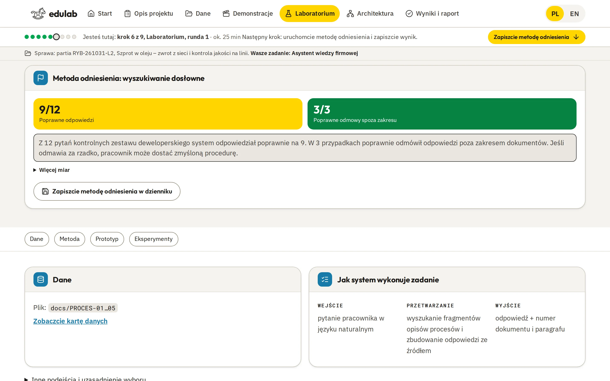
15 · iterate · 30 min
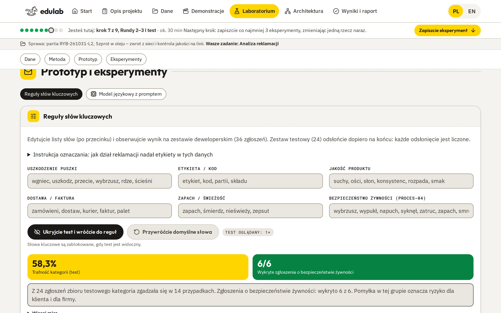
16
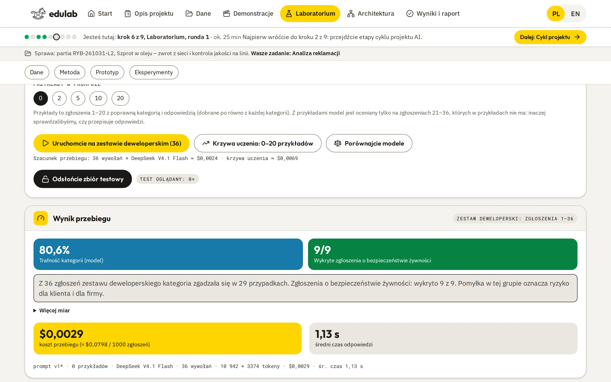
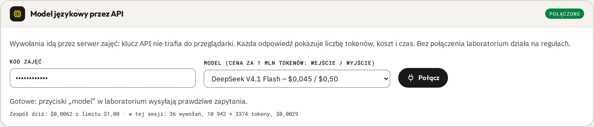
17 · risk · 20 min
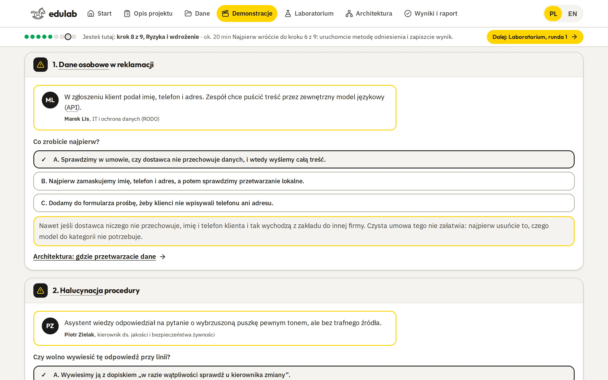
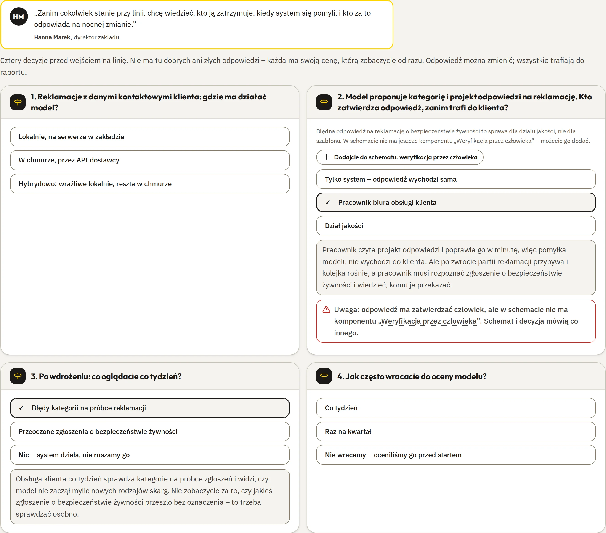
18
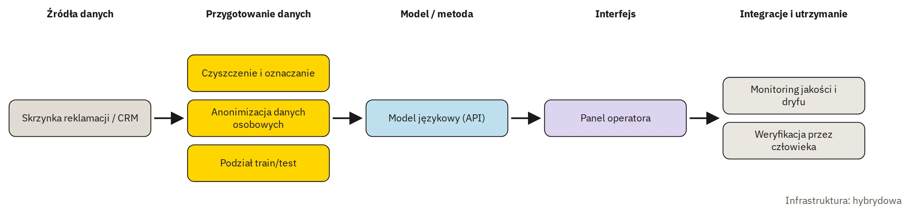
19 · report · 15 min
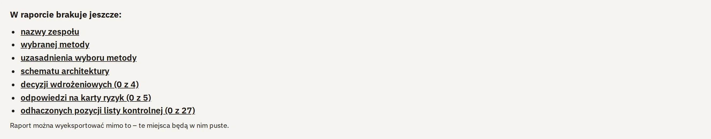
20
21
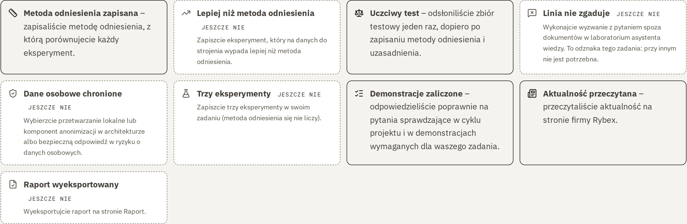
22
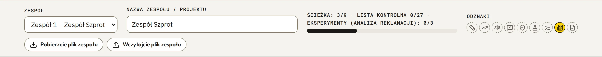
23
24
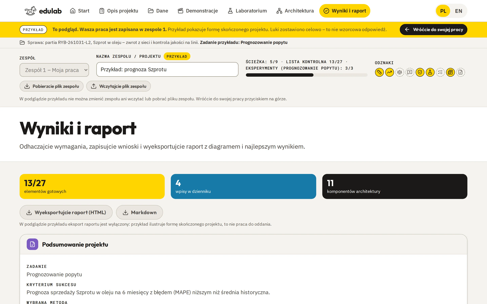
25
26
https://rybex.warsztaty-ai.com/rybex-ai-workshop.html
28